Префектура Миэ · Инабэ · природа и кемпинг
Инабэ у гор Судзука: палатки Nordisk, кемпинг в ущелье, обед с печи и чайная ферма
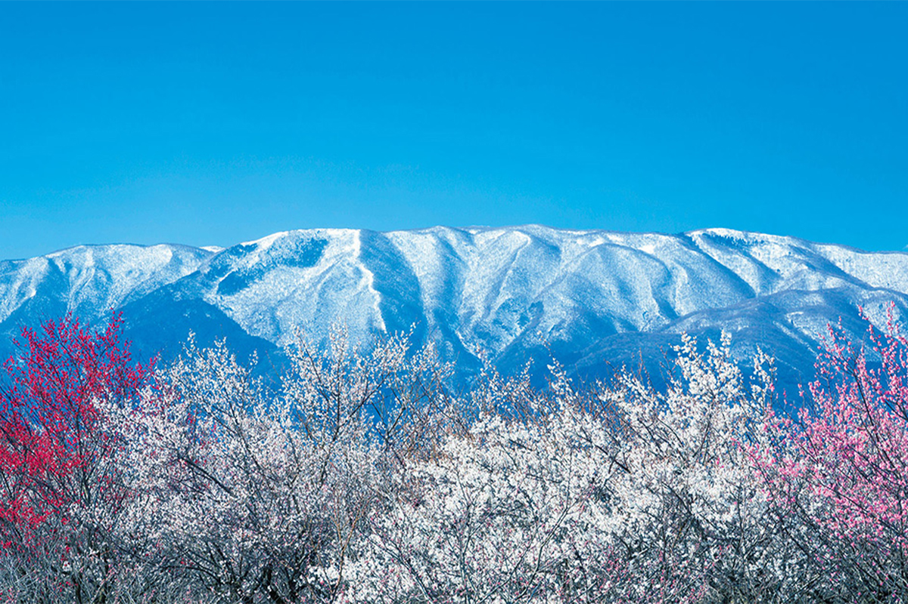
Инабэ лежит на самом севере префектуры Миэ, в долине между двумя горными цепями. Отсюда час езды до Нагои, а в горах ждут кемпинги, ущелья, чайные плантации и тысячи слив.
Место
Город у подножия Судзуки
Инабэ занимает самый северный угол префектуры Миэ. С севера его прикрывают горы Ёро, с запада тянется хребет Судзука, а между ними раскинулись рисовые поля. На равнине стоят заводы крупных компаний, и по объёму промышленности Инабэ второй город префектуры. Но больше половины его территории, около 58%, приходится на горы, и их здесь знают как место для кемпинга и велопрогулок.
От Нагои сюда около 40 минут на машине, от Осаки тоже недалеко, поэтому в выходные горы Инабэ заполняются горожанами. В Японии есть слово «ноасоби», игры на природе: так называют старую привычку проводить время среди полей и лесов, следить за сменой сезонов и отдыхать от городской суеты. Для ноасоби в Инабэ есть всё: от кемпингов до ферм, где можно поработать руками вместе с хозяевами.
Самое известное место здесь кемпинг «Аогавакё» в ущелье реки Аогава. Его называют самым популярным кемпингом западной Японии.
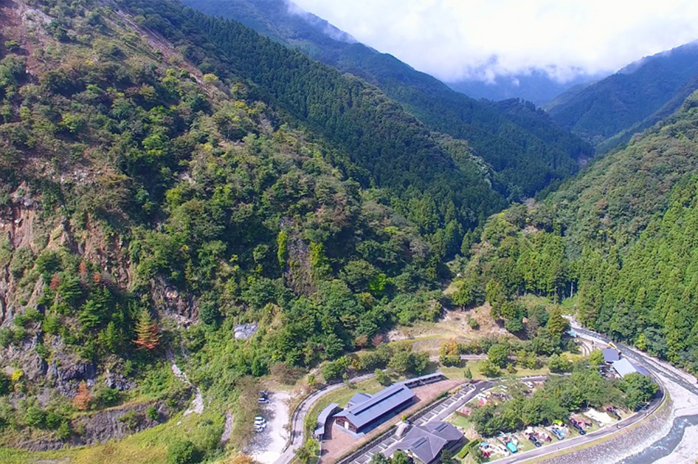
Кемпинг «Аогавакё»
- Адрес
- префектура Миэ, Инабэ, Хокусэй, Синмати, 614
- Телефон
- +81 594-72-8300
Кемпинг
Nordisk в ущелье Угакэй
Nordisk это датская марка снаряжения для отдыха на природе с историей больше ста лет. Её девиз «Nature is Luxury»: в компании уверены, что время на природе делает жизнь лучше. Nordisk выпускает палатки, тенты и всё, что нужно в походе. Особенно любят её хлопковые палатки естественного цвета: считается, что именно они запустили в Японии моду на глэмпинг.
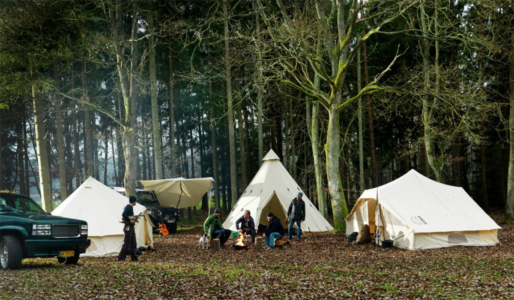
Марка зарегистрировала в Японии и слово «хюгге». По-датски так называют уютное, неспешное время, когда хорошо и спокойно на душе, и чувство счастья, которое от него остаётся. Nordisk много сделала, чтобы это слово узнали японцы.
С Инабэ компанию связывает история с 2019 года, когда она провела здесь встречу своих покупателей. В 2021 году Nordisk и город договорились о сотрудничестве, и первым общим делом стал кемпинг Nordisk Hygge Circles UGAKEI в ущелье Угакэй у хребта Судзука. Это первая площадка марки в Японии.
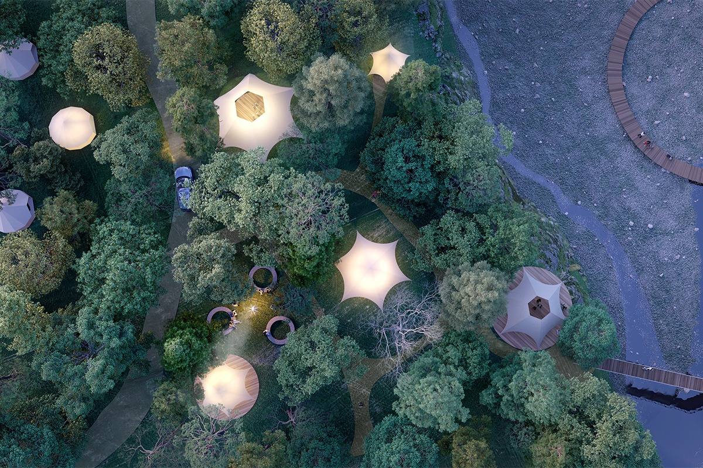
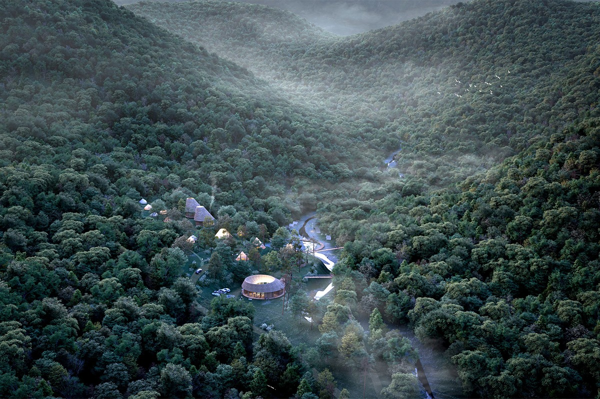
Над проектом работали вместе с датским архитектурным бюро Tredje Natur, японской инженерной компанией Structured Environment и советником по устойчивому развитию Henrik Innovation, при поддержке посольства Дании. Задумка простая: показать хюгге через природу Угакэй. В кемпинге три зоны. В одной можно поставить свою палатку и жить в ущелье как есть. Во второй стоят постоянные палатки Nordisk для тех, кто хочет отдельный уголок без своего снаряжения. В третьей находятся домики для самого комфортного отдыха.
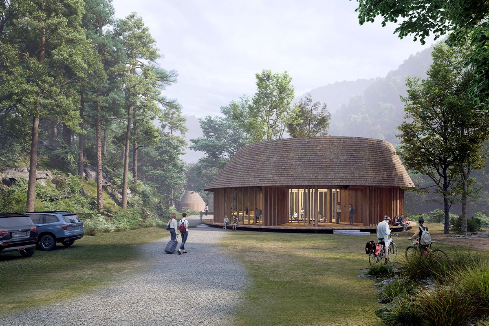
Строили кемпинг дольше, чем планировали: открыли его 3 апреля 2023 года.
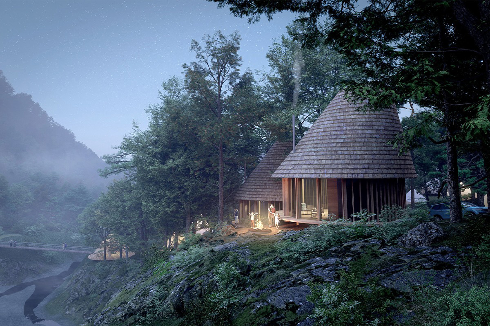
Nordisk Hygge Circles UGAKEI
- Адрес
- префектура Миэ, Инабэ, Даиан, Исигурэ-Минами, 2999-5
- Телефон
- +81 594-37-7769
Гости у фермеров
Команда «Инабэ асоби»
Провести день в кемпинге и уехать можно где угодно. Поэтому в Инабэ решили звать гостей к тем, кто здесь живёт и работает на земле: к фермерам, которые выращивают овощи без химикатов, к чайным мастерам. Раньше у местных производителей не было общего дела. Теперь они собрались в команду «Инабэ асоби» и сами придумывают программы для гостей.
Okudo Nakamuraya: рис из печи
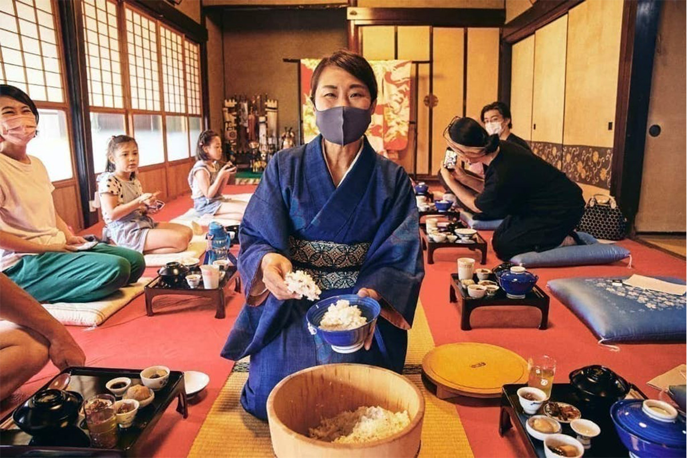
Okudo Nakamuraya занимает дом деревенского старосты, построенный около 220 лет назад. Здесь подают рис, сваренный в печи «камадо», и сезонные блюда лечебной кухни якудзэн из местного риса, яиц и овощей. Хозяйка переехала сюда из Нагои по программе, которая помогает горожанам поселиться в сельской местности, и теперь сама занимается пустующими домами Инабэ и помогает переезжать другим.
Гостям здесь предлагают растопить печь дровами и сварить рис самим. Есть и программа, где плетут соломенные сандалии, начиная с того, что скручивают верёвку из соломы. Хозяйка собиралась перестроить флигель в гостевой дом, который сдают целиком.
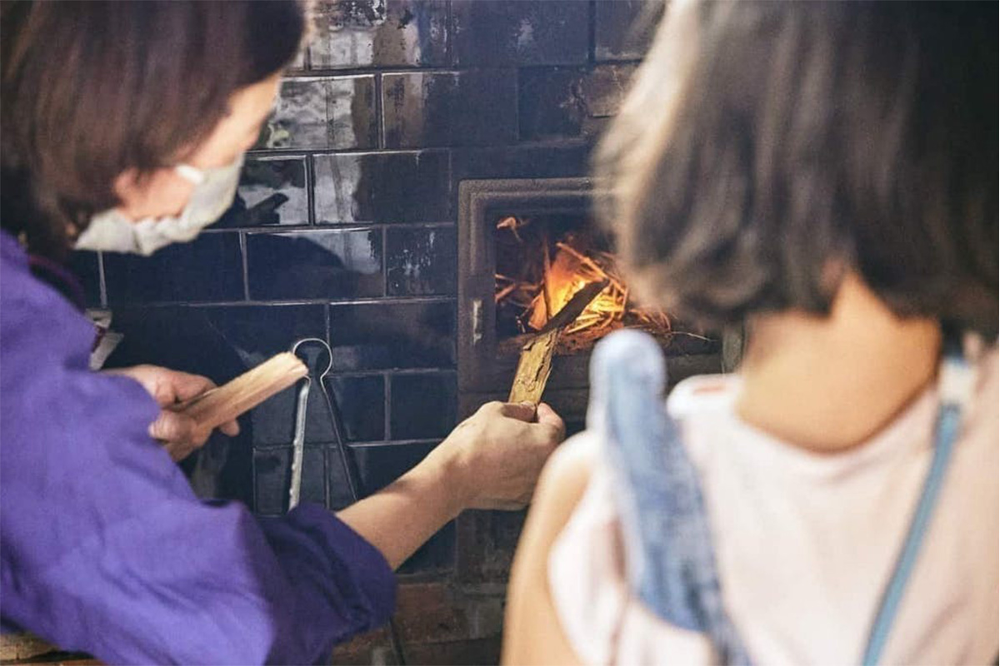
Okudo Nakamuraya
- Адрес
- префектура Миэ, Инабэ, Фудзивара, Нисинодзири, 1040
- Телефон
- +81 594-37-4014
Marushin Ryokkoen: чай с историей в 140 лет
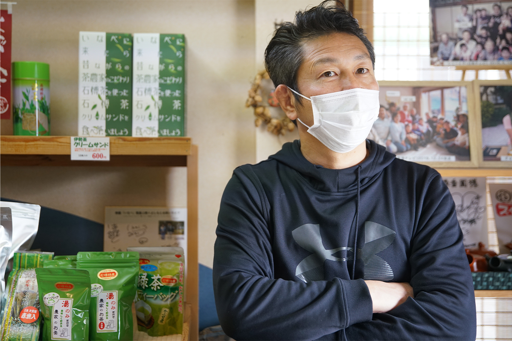
Хозяин фермы Marushin Ryokkoen раньше преподавал физкультуру в школе префектуры Миэ и тренировал дзюдоистов. Когда заболел дед, он вернулся и взял семейное дело. Ферме больше 140 лет, её чай получал награды на конкурсах. В Инабэ хозяина знают как человека, который сводит вместе местных предпринимателей и мэрию.
На ферме можно собирать чайный лист, скручивать его вручную и обжаривать ходзитя. В 2022 году хозяин собирался открыть у дома лавку с кафе японского чая.
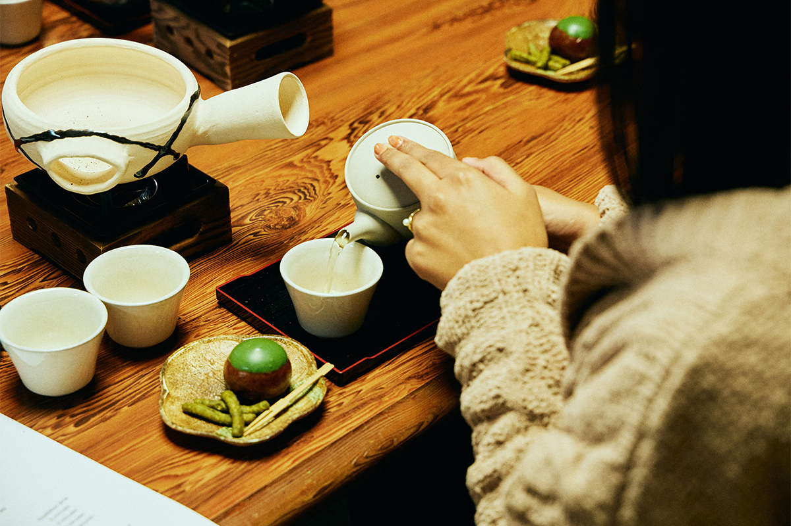
Marushin Ryokkoen
- Адрес
- префектура Миэ, Инабэ, Даиан, Исигурэ
- Телефон
- +81 594-78-0027
Сливы
Парк на 4000 деревьев
Будущей базой для прогулок по Инабэ должен стать сливовый парк. В нём растёт больше 4000 слив, а в 2022 году здесь задумали устроить глэмпинг прямо среди деревьев. В сентябре 2026 года в парке открылся комплекс Awai с номерами и программами для гостей.
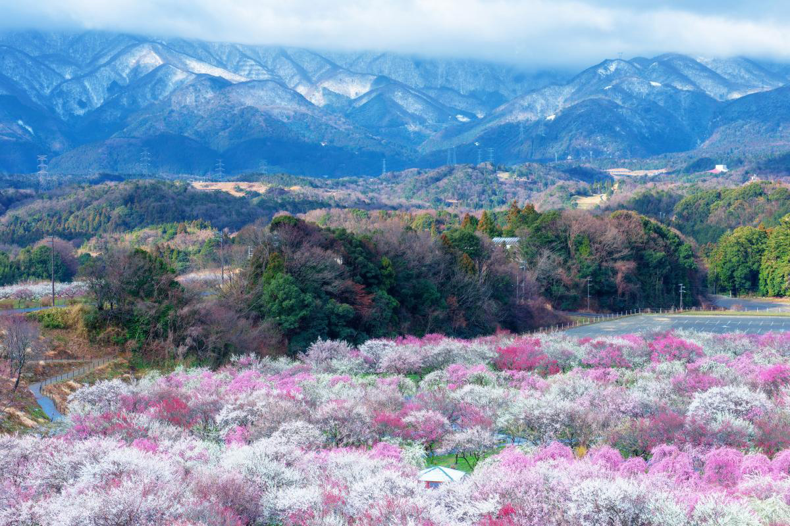
Сливовый парк Инабэ
- Адрес
- префектура Миэ, Инабэ, Фудзивара, Канаэ, 717